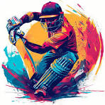

Information of cricket

cricket
-
Cricket is a game played by two teams of eleven players each on a pitch with two sets of three stumps, which are called wickets.
The bowler bowls the ball down the pitch to the batsman of the opposing team, who must defend the wickets in front of which he stands.
-
The game of cricket is played similar to baseball, with two teams aiming to score the most points in the form of runs.
The game makes use of bats, wickets, and a field as players try to hit the ball with a bat then run for points.